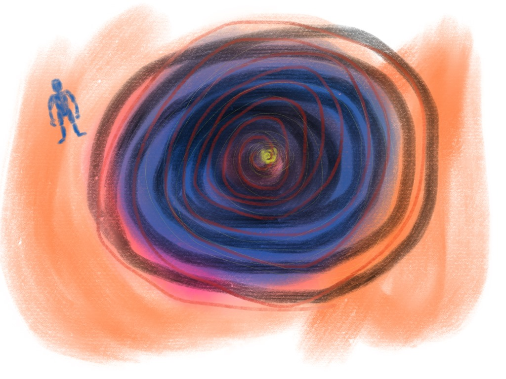

What If Abe Lincoln and Morgan Freeman Switched?
All photos created by Murphy Bot based on EMToast’s questions.
All photos created by Murphy Bot based on EMToast’s questions.

All photos created by Murphy Bot based on EMToast’s questions.

All photos created by Murphy Bot based on EMToast’s questions.

All photos created by Murphy Bot based on EMToast’s questions.

All photos created by Murphy Bot based on EMToast’s questions.

All photos created by Murphy Bot based on EMToast's questions.

4dr14nqg / Pixabay “Ask the Doctor” where readers ask questions of the world renounced general practitioner Dr. Charles V. Fullerton.

The lion mesmerizes its prey. It says, "Lay down and die," but the lion does not eat its prey. This…

By: steve lodefink Miniature cockroaches twenty times tinier than bedbugs have been discovered in our local area. Scientists report the…


Oliver, the human-chipmanzee hybrid who died in 2012 was more intelligent than was previously thought. A recent memoir was purportedly…

An alternate movie poster for the July 2016 movie Godzilla Resurgence has leaked. Check out the teaser trailer for the…

Right now we're all thirsty for something cleaner. Right now artificial feels so right. Right now we're gonna make it…

WikiImages / Pixabay American Inventor, Thomas Edison, shared 7 strange truths about himself with EMToast (when we read his private…

TEDDY BEAR TOWN: A teddy bear female has been sentenced to 35 years to life in prison for the plastic-bag…

This is EMToast University with Professor Miguel Q. Tadpool. Professor Tadpool, is 2015 "Chill Professor of the Year" for his…

“The Oracle” where a select group is asked to answer unknown questions and to ask unanswerable questions. These are submitted…

One day you're going to find my battle scarred skeleton underneath your front porch.

I was bit by a Chips Ahoy. Now at every full moon, my bones turn to cookie crumbs and Kool-Aid…

Deerface, Iowa -- Two officers and a college student remain in critical but stable condition after an arrest gone wrong.

A pregnant woman told her husband, “For the tenth one, I want to do a Jersey Devil thing but with…

All the Robots Are Wiping Now is due to be released soon in our Local Area bookstores. Please check the…

Robo-Coffin is the new product from Local Area Industries that eliminates the worry and stress about dying alone. No longer…

LOCAL AREA, USA. Authorities in our local area are warning residents to be on alert for a serial slapper. This…

Does the Reese owl bat spray blood out of its mouth or hiss? No, this denizen of the North…

It finally happened. Another surprise from that bitch you broke up with more than 20 years ago. He shows up…

'A new danger on our local roads has been dubbed the "Safety First Vigilante" by those who've seen him. He…

If you want to back into Gameboy games, don’t bother buying a used Nintendo Gameboy of any model. Those things…


This is "Tattling with Tanya" Calumny the hallucinatory gossip columnist. Tanya is a proud Wernicke–Korsakoff syndrome survivor which gives her…

This is “Ask the Doctor” where readers ask questions of the world renounced general practitioner Dr. Charles V. Fullerton. Dear…

I asked 56 year old Remy who was browsing the Starwatcher scope if he thought the sun saucers were there.

Joellin G.H. adopted a suicide dog named Zeek from Helping Hands Suicide Dogs to help here disabled father in his…

This is “Ask the Doctor” where readers ask questions of the world renounced general practitioner Dr. Charles V. Fullerton. Dear…

This is “Ask the Doctor” where readers ask questions of the world renounced general practitioner Dr. Charles V. Fullerton. Dear…

This is “Off the Clock” with Anthony J. Booze. AJ Booze asks residents in our local area questions they rejected at…

I'll never forget the event that lead to my eventual disappearance. I came home from my math tutor and found…

“The Oracle” where a select group is asked to answer unknown questions and to ask unanswerable questions. These are submitted…

"Snippets with Racter" quoted from our conversations with the artificial intelligence simulator Racter (authored by William Chamberlain and Thomas Etter;…

"Snippets with Racter" quoted from our conversations with the artificial intelligence simulator Racter (authored by William Chamberlain and Thomas Etter;…

“Ask the Doctor” where readers ask questions of the world renounced general practitioner Dr. Charles V. Fullerton. Dear Doctor Fullerton:…

“The Oracle” where a select group is asked to answer unknown questions and to ask unanswerable questions. These are submitted…

"Snippets with Racter" quoted from our conversations with the artificial intelligence simulator Racter (authored by William Chamberlain and Thomas Etter;…

“The Oracle” where a select group is asked to answer unknown questions and to ask unanswerable questions. These are submitted…

This is “Ask the Doctor” where readers ask questions of the world renounced general practitioner Dr. Charles V. Fullerton.Dear Dr.

“The Oracle” where a select group is asked to answer unknown questions and to ask unanswerable questions. These are submitted…

This is “Off the Clock” with Anthony J. Booze. AJ Booze asks residents in our local area questions they rejected…